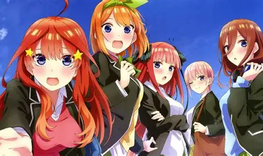

- Gotoubun no Kimochi;
- Sign;
- Gotoubun no Katachi;
- Hatsukoi;
- Gotoubun no Kiseki;
- Arigatou no Hana;
- Gotoubun no Mirai;
- Takaramono;
- Gotoubun no Egao;
- Memories

Gotoubun no Kimochi - опенинг серій 1 сезону аніме.
Sign - ендинг серій 1 сезону аніме.
Gotoubun no Katachi - опенинг серій 2 сезону аніме.
Hatsukoi - ендинг серій 2 сезону аніме.
Gotoubun no Kiseki - опенинг фільму аніме.
Gotoubun no Hanayome (Arigatou no Hana) - ендинг фільму аніме.
Gotoubun no Mirai - опенинг "OVA/TV Special" серії аніме.
Takaramono - ендинг "OVA/TV Special" серії аніме.
Gotoubun no Egao - опенинг серій "Медового місяця" аніме.
Memories - ендинг серій "Медового місяця" аніме.